|
Introduction
Download Homepage |
Tutorial (using Graphical User Interface)
Prerequisites
- Java JRE 5 or above (
 download)
download)
- R-DBMS with JDBC-driver
- jailer_1.0.zip
Step 1. Setup Jailer
Unpack jailer.zip:| $unzip jailer.zip $cd jailer $ll drwxr-xr-x 3 wisser users 136 2007-06-01 10:12 jailer.sh -rw-r--r-- 1 wisser users 1175 2007-06-01 10:10 build.xml drwxr-xr-x 3 wisser users 136 2007-06-01 10:10 config drwxr-xr-x 3 wisser users 344 2007-06-01 10:10 datamodel drwxr-xr-x 3 wisser users 184 2007-06-01 10:10 example drwxr-xr-x 3 wisser users 160 2007-06-01 10:10 extractionmodel drwxr-xr-x 3 wisser users 272 2007-06-01 10:11 lib drwxr-xr-x 3 wisser users 112 2007-06-01 10:10 restrictionmodel drwxr-xr-x 4 wisser users 160 2007-06-01 10:10 script drwxr-xr-x 4 wisser users 96 2007-06-01 10:10 src |
Start the GUI (on Windows start jailerGUI.bat):
| $ sh jailerGUI.sh |
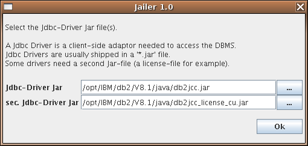
Select the the JDBC-Driver jar-file and click "Ok". The main window appears then:
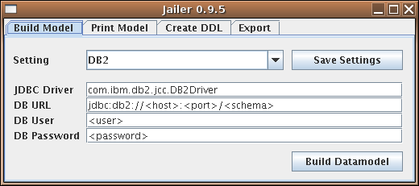
Step 2. Setup the Database
Create a new schema and execute | $db2 connect to wisser user scott using tiger $db2 -tvf script/scott-tiger.sql |
Step 3. Building the data model
Jailer needs to know all the tables and all associations between them, so we must tell him. Tables are defined in datamodel/table.csv, associations in datamodel/association.csv.Fortunately most of the model definitions can be generated automatically from introspection of the relational database.
Enter the DB-URL, the user and password and click on "Build Datamodel":
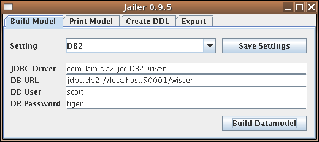
Jailer found three tables and two associations:
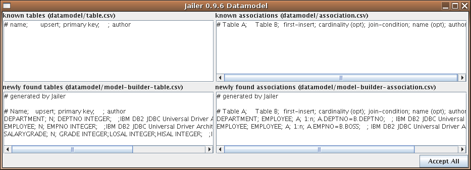
"Accept" the newly found elements, click on "Accept All" to move the content of the model-builder-* files to table.csv and association.csv:
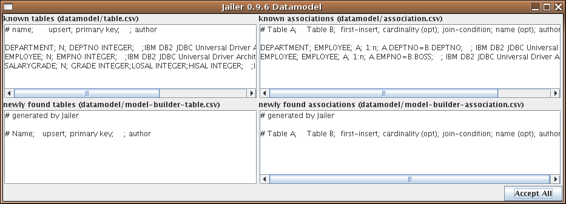
Close the window.
One association is still missing: depending on his salary an employee is classified into a salary grade.
Add this definition manually (by using a text editor, there is no GUI-support for that right now).
| datamodel/association.csv
|
| # Table A; Table
B; first-insert; cardinality (opt); join-condition; name (opt);
author DEPARTMENT; EMPLOYEE; A; 1:n; A.DEPTNO=B.DEPTNO; ; IBM DB2 JDBC Driver; EMPLOYEE; EMPLOYEE; A; 1:n; A.EMPNO=B.BOSS; ; IBM DB2 JDBC Driver; EMPLOYEE; SALARYGRADE; ; n:1; A.SALARY BETWEEN B.LOSAL AND B.HISAL; ; Wisser |
Note that Jailer now knows more about the data model than the DBMS.
Step 4. Examine the data model |
1 |
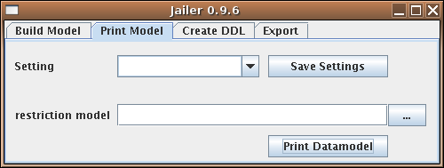
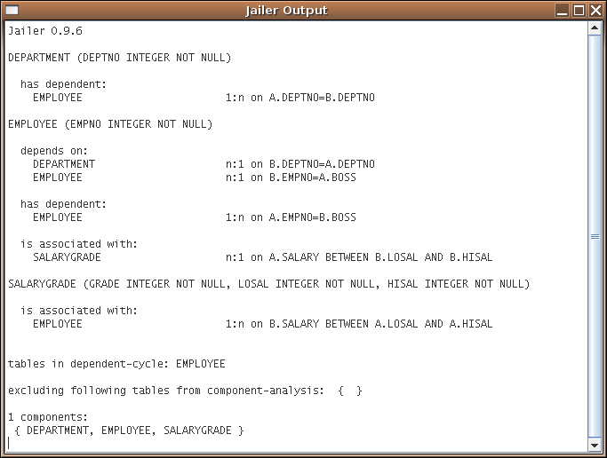
Note that each association is listed twice. While associations are undirected, restrictions on them are directed. We will see later for what restrictions are good for and how to define them.
Step 5. Prepare the DB for exports
Jailer uses some tables for collecting entities inside the data base. The structure of these tables depends on the data-model, so we have to create the tables after building the data-model files. (You can easily re-create the tables after any model-changes)Select the"Create DDL" tab and click on "Create DDL" button. Copy the DDL-Statements and execute them using an appropriate DB-tool:
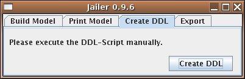
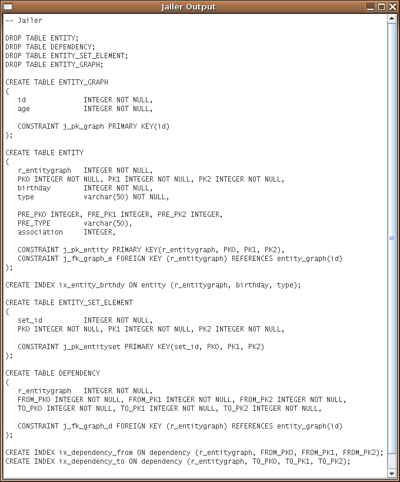
Step 6. Export evil Scott (unrestricted)
Now export the employee named Scott. To do that we need an extraction-model. Create a file
named extractionmodel/scott.csv.
(Also no GUI support for that).| extractionmodel/scott.csv
|
| # the employee named 'SCOTT' and all
associated entities # subject; condition; limit; restrictions EMPLOYEE; NAME='SCOTT'; ; |
This extraction model describes a set of entities containing (the) employee(s) named 'SCOTT', entities associated with these employees, entities associated with these entities and so forth.
Export this set:
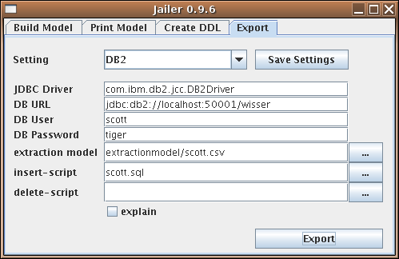
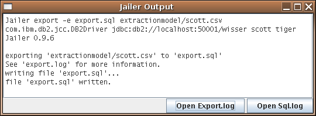
Open Export.log:

A file
But why are there also statements for all other employees? (Bad luck for innocent James!)
Let Jailer explain why:
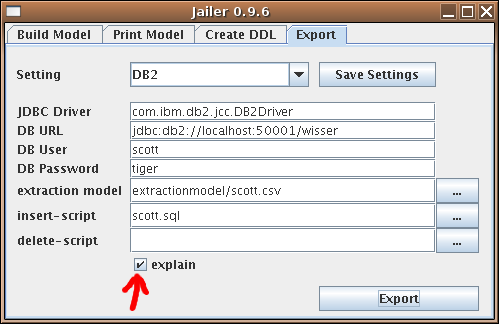
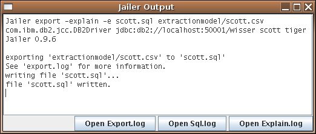
Open the Explain.log:
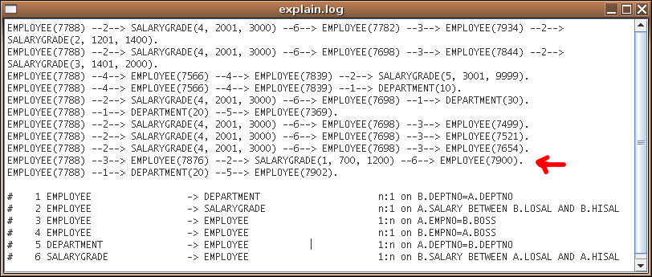
Adams is Scotts subordinate and James and Adams are both classified in the same salary-grade.
Step 7. Export evil Scott (restricted)
If we export an employee we must export his boss and department too! Otherwise the set of exported entities would not be consistent (due to the foreign key constraints). No constraint prevents us from excluding the salary-grade from export, but we should'nt do that becauses the resulting set would also be inconsistent.To exclude subordinates, 'same department'-members and 'same salary-grade'-employees, we must restrict some associations. To do so, define a restriction-model: (with text-editor, no GUI support)
| restrictionmodel/no-subordinates.csv
|
| # from A (or association name); to
B; restriction-condition SUBORDINATE; ; ignore DEPARTMENT; EMPLOYEE; ignore SALARYGRADE; EMPLOYEE; ignore |
The restriction-condition is an extension of the associations join-condition (expressed in SQL-syntax) for one direction of an association.
"ignore" stands for an unsatisfiable condition.
Note that the association between DEPARTMENT and EMPLOYEE is restricted in that direction by designating the source and destination table. It's obviously not possible to restrict reflexive associations the same way, so we have to give the 'subordinate of'-association a name.
| datamodel/association.csv
|
| # Table A; Table
B; first-insert; cardinality (opt); join-condition; name (opt);
author DEPARTMENT; EMPLOYEE; A; 1:n; A.DEPTNO=B.DEPTNO; ; IBM DB2 JDBC Driver; EMPLOYEE; EMPLOYEE; A; 1:n; A.EMPNO=B.BOSS; SUBORDINATE; IBM DB2 JDBC Driver; EMPLOYEE; SALARYGRADE; ; n:1; A.SALARY BETWEEN B.LOSAL AND B.HISAL; ; Wisser |
You can examine the restrictions the same way you examined the data model:
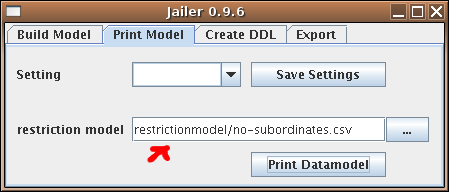
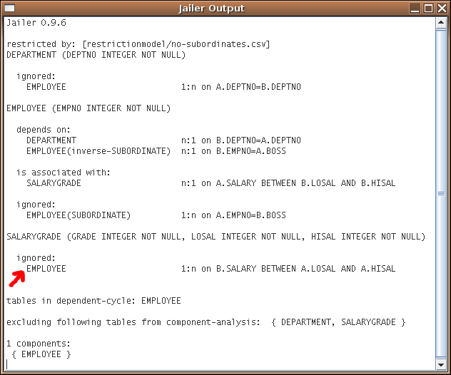
A restriction-model is part of the extraction-model. Create a new extraction-model:
| extractionmodel/scott-without-subordinates.csv
|
| # the employee named 'SCOTT' and all
associated entities # subject; condition; limit; restrictions EMPLOYEE; NAME='SCOTT'; ; no-subordinates.csv |
Choose extraction model scott-without-subordinates.csv, "Export" again and look what Jailer extracts now:
| scott.sql |
| -- generated
by Jailer at Mon Jun 04 15:08:15 CEST 2007 from wisser@u19 -- -- extraction model: EMPLOYEE where NAME='SCOTT' (extractionmodel/scott-without-subordinates.csv) -- database URL: jdbc:db2://localhost:50001/wisser -- database user: scott -- exported entities: 7 -- DEPARTMENT 2 -- EMPLOYEE 3 -- SALARYGRADE 2 Insert into SALARYGRADE(GRADE, LOSAL, HISAL) values (4, 2001, 3000), (5, 3001, 9999); Insert into DEPARTMENT(DEPTNO, NAME, LOCATION) values (20, 'RESEARCH', 'DALLAS'), (10, 'ACCOUNTING', 'NEW YORK'); Insert into EMPLOYEE(EMPNO, NAME, JOB, BOSS, HIREDATE, SALARY, COMM, DEPTNO) values (7839, 'KING', 'PRESIDENT', null, '1981-11-17', 5000.00, null, 10); Insert into EMPLOYEE(EMPNO, NAME, JOB, BOSS, HIREDATE, SALARY, COMM, DEPTNO) values (7566, 'JONES', 'MANAGER', 7839, '1981-04-02', 2975.00, null, 20); Insert into EMPLOYEE(EMPNO, NAME, JOB, BOSS, HIREDATE, SALARY, COMM, DEPTNO) values (7788, 'SCOTT', 'ANALYST', 7566, '1982-12-09', 3000.00, null, 20); |
Freedom for the innocent!
Step 8. Delete Scott (unsuccessful)
It is also possible to create DML-scripts for deletion of exported entities: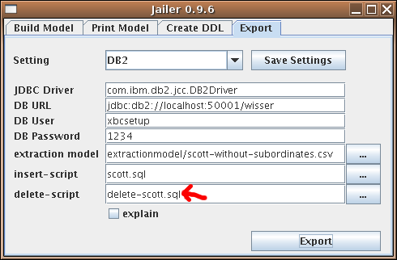
| delete-scott.sql |
| -- generated by Jailer at Tue Jun 05
10:20:40 CEST 2007 from wisser@u19 -- -- extraction model: EMPLOYEE where NAME='SCOTT' (extractionmodel/scott-without-subordinates.csv) -- database URL: jdbc:db2://localhost:50001/wisser -- database user: scott -- exported entities: 7 -- DEPARTMENT 2 -- EMPLOYEE 3 -- SALARYGRADE 2 -- -- Tabu-tables: { } -- -- entities to delete: 0 |
Jailer has exported 7 entities but didn't delete anything! That's because deleting Scott but not Scotts subordinate (who is not in the set defined by the extraction-model!) would violate the integrity of the data base.
Step 9. Delete Scott
In order to delete Scott, me must delete his subordinate too. To do so, relax the restriction on the SUBORDINATE-association:
| restrictionmodel/no-subordinates.csv
|
| # from A (or association name); to
B; restriction-condition SUBORDINATE; ; A.NAME='SCOTT' DEPARTMENT; EMPLOYEE; ignore SALARYGRADE; EMPLOYEE; ignore |
and "Export" again:
| delete-scott.sql |
| -- generated by Jailer at Tue Jun 05
10:50:03 CEST 2007 from wisser@u19 -- -- extraction model: EMPLOYEE where NAME='SCOTT' (extractionmodel/scott-without-subordinates.csv) -- database URL: jdbc:db2://localhost:50001/wisser -- database user: scott -- exported entities: 9 -- DEPARTMENT 2 -- EMPLOYEE 4 -- SALARYGRADE 3 -- -- Tabu-tables: { } -- -- entities to delete: 2 -- EMPLOYEE 2 (-2) Delete from EMPLOYEE Where EMPNO in (7876); Delete from EMPLOYEE Where EMPNO in (7788); |
The file delete-scott.sql contains Delete-statements for Scott and Adams.
Note that scott.sql now contains Insert-statements for Adams and his salary-grade too.